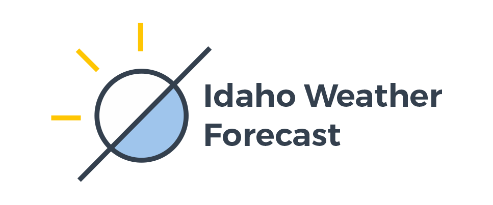

Website Name:
Idaho Weather Forecast
Domain Name
www.idahoweatherforecast.com
Site Purpose
The purpose of my website is to be the primary and reliable source of weather information to those in Idaho as well as anyone else outside, who might have an interest or plans of visiting the state.
People rely, and often check the weather in order to make plans, be it going to work, businesses in their decision making, outdoor activities like hiking, farmers in their day to day operations and so forth. This website will also provide other useful information, a gallery and upcoming events in the cities.
Website Logo
Here's a logo I designed for my website:
